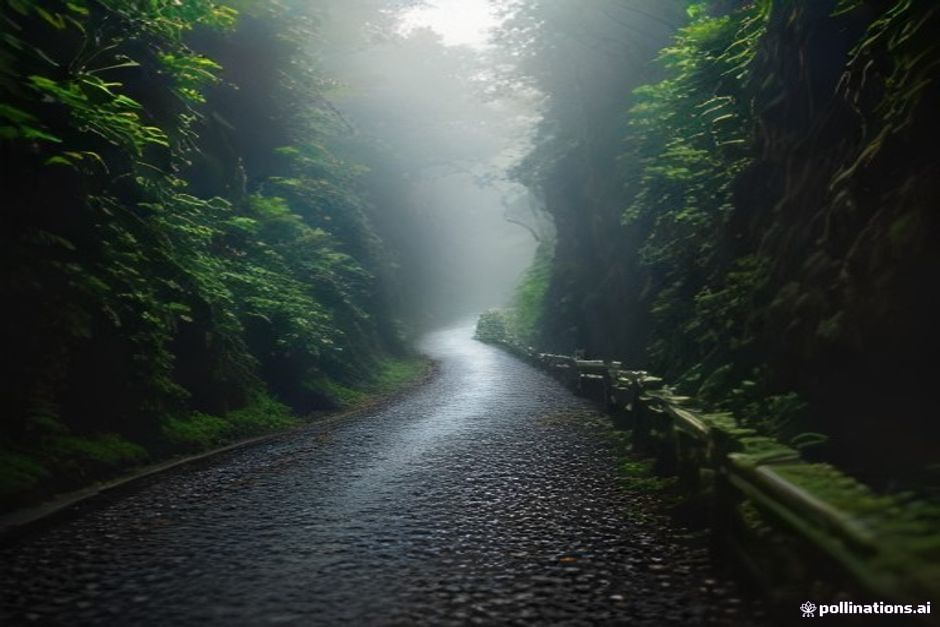
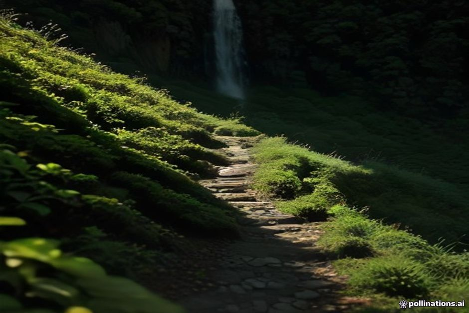

La mayoría de los visitantes que suben en coche hasta Ribeiro Frio solo caminan hasta el Miradouro dos Balcões y dan la vuelta. La Levada do Furado es lo que hay al otro lado de ese mirador: once kilómetros de uno de los canales de riego más antiguos de Madeira, abierto directamente a través del antiguo bosque de laurel de la isla hasta la aldea de Portela.
¿Qué es la Levada do Furado?
La Levada do Furado es el sendero PR10 de Madeira, un camino que sigue una de las levadas públicas más antiguas de la isla, de Ribeiro Frio a Portela, en el lado noreste de la isla. El nombre viene de los pequeños túneles excavados a mano en la roca —los furados— por los que pasa la levada allí donde la ladera era demasiado sólida para bordearla. Es una de las introducciones más completas a la laurisilva, el bosque de laurel declarado Patrimonio de la Humanidad por la UNESCO que antaño cubría la mayor parte de Madeira, con el camino discurriendo pegado al canal de agua durante todo el recorrido.

¿Cuánto dura la caminata de Ribeiro Frio a Portela?
Unos 11 km de ida, clasificado como moderado, y a la mayoría de los senderistas les lleva entre cuatro y cinco horas a un ritmo constante. El sendero desciende suavemente en conjunto, desde unos 880 m en Ribeiro Frio hasta unos 645 m en Portela, así que el reto no es la subida, sino la propia longitud, el camino estrecho y el hecho de que no hay atajo de vuelta una vez que te has puesto en marcha. Por el camino, la levada bordea el valle de Ribeiro Frio, se abre a vistas de la formación rocosa de Penha d'Águia y cruza terrenos de cultivo por encima de Faial, São Roque do Faial y Porto da Cruz antes de llegar al mirador de Portela, al final.
¿Hay que reservar el PR10 en 2026?
Sí. Desde 2026, todos los senderos PR numerados de Madeira exigen una reserva de franja horaria de pago a través del portal oficial SIMplifica antes de salir, y la Levada do Furado no es una excepción. La tasa es de 4,50 € por persona mayor de 12 años, con exención para los niños de 12 años o menos, y las plazas deben reservarse online con antelación —no se puede reservar al llegar—. Reserva una franja que te deje suficiente luz de día para terminar cómodamente los 11 km completos, ya que el sendero no vuelve en bucle a un aparcamiento en el punto de partida.
¿En qué se diferencia del corto paseo hasta Balcões?
El Miradouro dos Balcões, el popular paseo corto desde Ribeiro Frio, está en realidad en esta misma levada: son los primeros veinte minutos, más o menos, del PR10 antes de que la mayoría dé la vuelta en el mirador. La Levada do Furado es lo que sucede si sigues adelante: horas más de bosque, túneles y vistas del valle, terminando en una aldea completamente distinta en lugar de volver en bucle a donde empezaste. Trata Balcões como el aperitivo y Furado como el sendero completo, si dispones de un día entero y no necesitas volver al mismo aparcamiento.

¿Es seguro el sendero, túneles incluidos?
En general sí, si lo respetas. Los túneles en sí son lo bastante cortos como para que la mayoría de los caminantes no necesiten linterna, aunque llevar una no cuesta nada. Lo que de verdad hay que tener en cuenta es la exposición: varios tramos discurren por un saliente estrecho sobre el valle, con una caída real a un lado, protegido con vallas en los puntos más expuestos, pero aun así no es un sendero para quien se sienta inseguro con las alturas o descuide dónde pisa. La vegetación exuberante puede ocultar la superficie del camino después de la lluvia, así que un buen calzado de senderismo importa aquí más que en los tramos más llanos y cuidados cerca de Ribeiro Frio.
¿Cómo se vuelve desde Portela?
En taxi, organizado con antelación o sobre la marcha. No hay servicio de autobús público directo que conecte Portela con Ribeiro Frio, pero los taxistas locales suelen esperar cerca del mirador de Portela a los caminantes que van llegando, y conviene tener guardado el número de un conductor antes de salir por si no hay ninguno cuando termines. Algunos caminantes prefieren organizar un coche en cada extremo, o simplemente plantean el día como trayecto de un solo sentido e incluyen el precio del taxi en el coste de la caminata.
¿Merece la pena combinarlo con una excursión en barco?
No el mismo día. La Levada do Furado se adentra en el interior montañoso de Madeira, en el lado noreste de la isla, un mundo aparte de la resguardada costa sur, donde una excursión privada en barco con Chifbay recorre la zona entre Câmara de Lobos y Ponta do Sol. Las dos ofrecen un contraste excelente a lo largo de una estancia más larga: un día entero en bosque antiguo a pie, y una tarde más tranquila en el agua con acantilados, calas y un baño, pero son caras distintas de la isla y tipos distintos de cansancio con los que terminar el día.
Balcões te enseña la postal. Furado son los once kilómetros que la hicieron posible.
Si ya has hecho el paseo corto hasta Balcões y te has preguntado qué había más adelante en la levada, Furado es la respuesta: solo organiza el taxi de vuelta a Ribeiro Frio antes de empezar, no después.